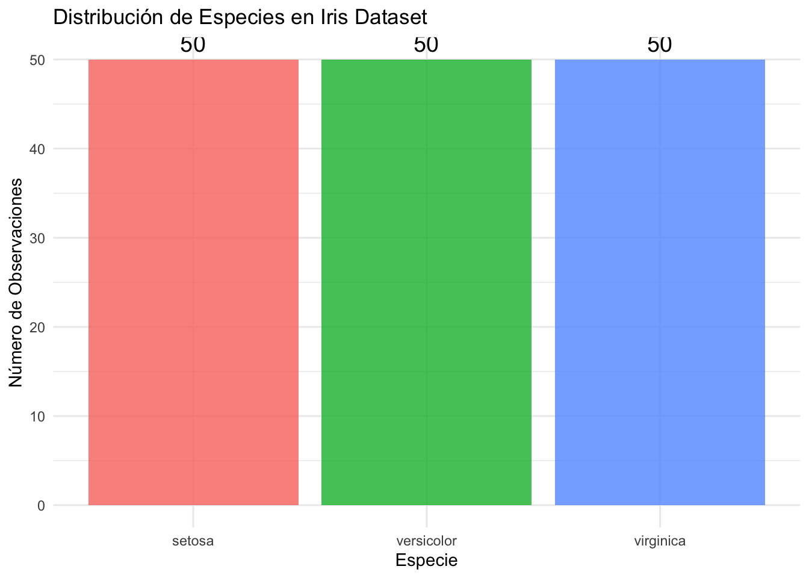
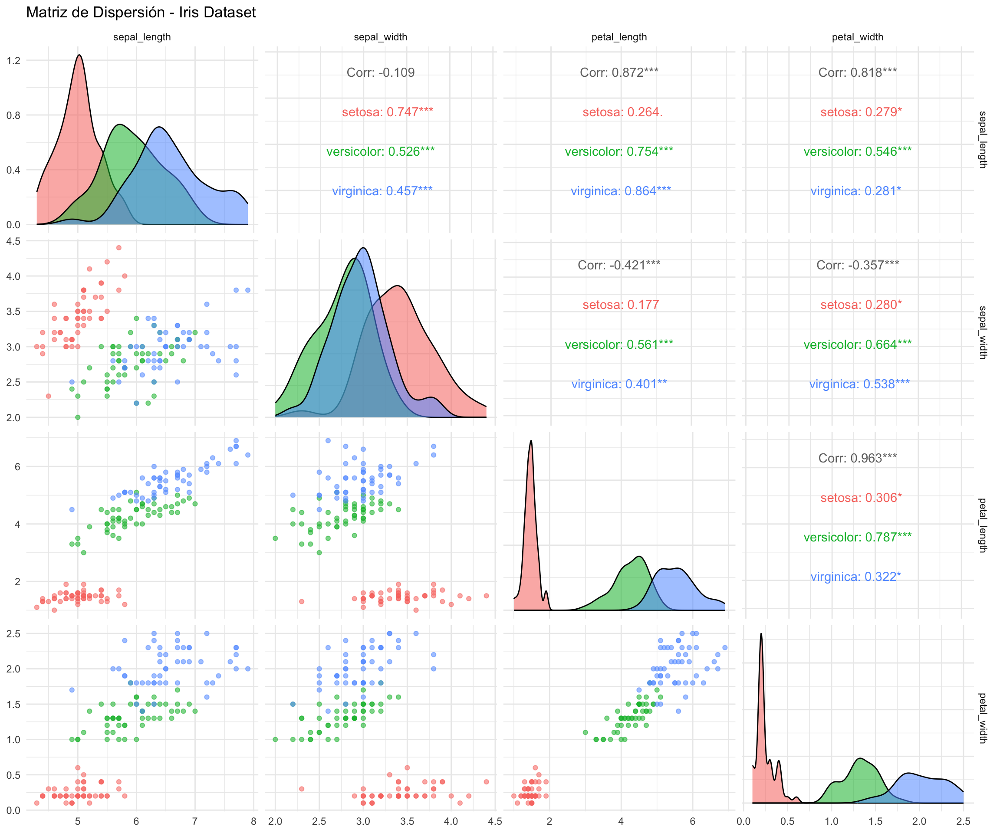
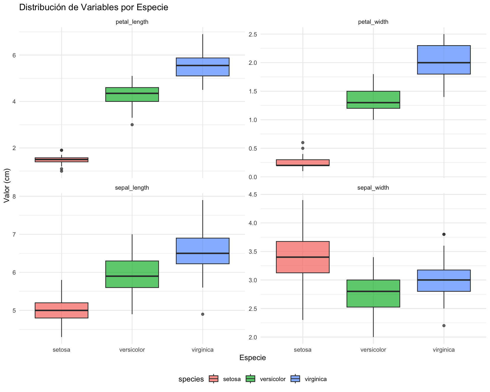
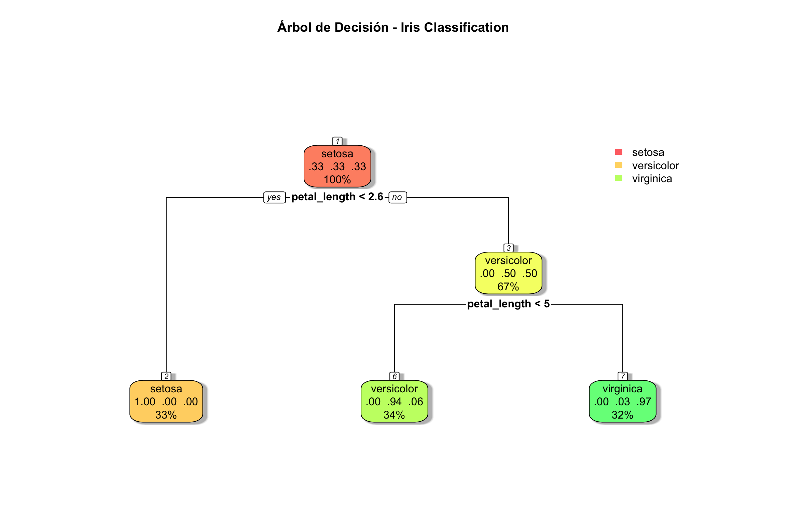
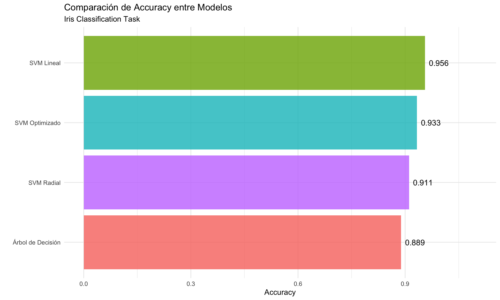
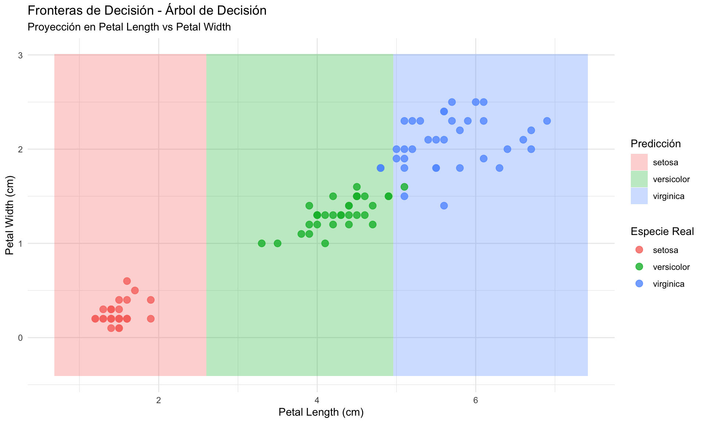
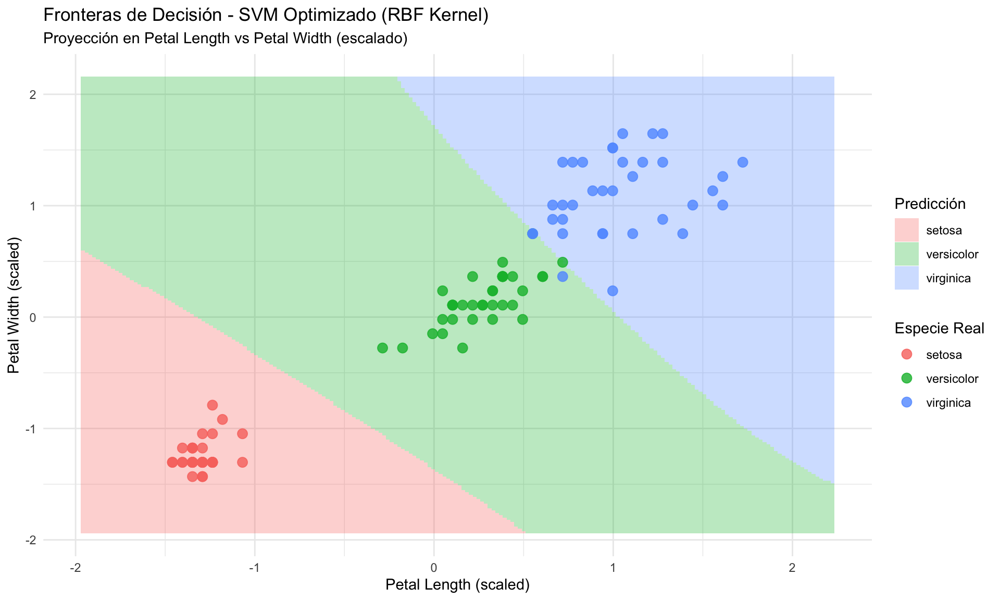
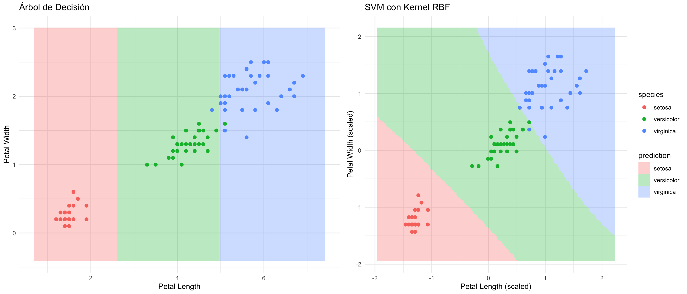

# Manipulación y visualización de datos
library(tidyverse)
# Modelado y validación
library(caret) # Framework unificado para ML
library(GGally) # Matrices de gráficos
# Modelos específicos
library(rpart) # Árboles de decisión
library(rpart.plot) # Visualización de árboles
library(e1071) # SVM
# Configuración
set.seed(42)
theme_set(theme_minimal())Tutorial Completo: Clasificación Multiclase con Iris Dataset
Árboles de Decisión y Support Vector Machines
1 Introducción
Este tutorial presenta un análisis completo de clasificación multiclase utilizando el famoso dataset Iris de Ronald Fisher (1936). Implementaremos y compararemos dos familias de algoritmos: árboles de decisión y Support Vector Machines (SVM).
1.1 ¿Por qué Iris Dataset?
El dataset Iris es fundamental en machine learning por varias razones:
- Histórico: Primer uso de datos reales para análisis discriminante lineal
- Educativo: Tamaño manejable con patrones claros
- Benchmark: Estándar para probar nuevos algoritmos
- Balance perfecto: 50 observaciones por cada una de 3 especies
- Separabilidad: Una clase linealmente separable, dos requieren métodos no lineales
1.2 Objetivos de Aprendizaje
Al completar este tutorial, serás capaz de:
- Implementar árboles de decisión para clasificación multiclase
- Entender y aplicar Support Vector Machines con diferentes kernels
- Realizar tuning de hiperparámetros mediante validación cruzada
- Comparar modelos usando métricas apropiadas
- Visualizar fronteras de decisión en espacios bidimensionales
1.3 Métodos Cubiertos
- Árboles de Decisión: Modelo interpretable basado en reglas
- SVM Lineal: Clasificador de máximo margen para datos linealmente separables
- SVM con Kernel RBF: Extensión no lineal usando el “kernel trick”
- SVM Optimizado: Tuning automático de hiperparámetros
2 Configuración Inicial
2.1 Carga de Librerías
Nota sobre reproducibilidad: set.seed(42) asegura que los resultados sean reproducibles a pesar de la aleatorización en división de datos y algunos algoritmos.
3 Carga y Exploración de Datos
3.1 Teoría: El Dataset Iris
Contexto histórico: Publicado en 1936 por el estadístico Ronald Fisher en su artículo “The use of multiple measurements in taxonomic problems”.
Variables:
sepal_length: Longitud del sépalo (cm)sepal_width: Ancho del sépalo (cm)petal_length: Longitud del pétalo (cm)petal_width: Ancho del pétalo (cm)species: Especie de iris (Setosa, Versicolor, Virginica)
Estructura botánica:
- Sépalo: Parte externa de la flor que protege el capullo
- Pétalo: Parte colorida que atrae polinizadores
3.2 Carga de Datos
iris_data <- read_csv("01_Datos/datasets_ml/iris.csv",
show_col_types = FALSE)
# Inspección inicial
print(paste("Dimensiones del dataset:", nrow(iris_data), "filas x",
ncol(iris_data), "columnas"))[1] "Dimensiones del dataset: 150 filas x 5 columnas"# Convertir species a factor para análisis de clasificación
iris_data <- iris_data %>%
mutate(species = as.factor(species))
# Estructura del dataset
glimpse(iris_data)Rows: 150
Columns: 5
$ sepal_length <dbl> 5.1, 4.9, 4.7, 4.6, 5.0, 5.4, 4.6, 5.0, 4.4, 4.9, 5.4, 4.…
$ sepal_width <dbl> 3.5, 3.0, 3.2, 3.1, 3.6, 3.9, 3.4, 3.4, 2.9, 3.1, 3.7, 3.…
$ petal_length <dbl> 1.4, 1.4, 1.3, 1.5, 1.4, 1.7, 1.4, 1.5, 1.4, 1.5, 1.5, 1.…
$ petal_width <dbl> 0.2, 0.2, 0.2, 0.2, 0.2, 0.4, 0.3, 0.2, 0.2, 0.1, 0.2, 0.…
$ species <fct> setosa, setosa, setosa, setosa, setosa, setosa, setosa, s…Decisión de código: Convertir species a factor es crítico porque:
- R interpreta factores como variables categóricas
- Los algoritmos de clasificación requieren factores para la variable objetivo
- Permite visualizaciones con colores automáticos por categoría
3.3 Distribución de Clases
# Tabla de frecuencias
tabla_especies <- table(iris_data$species)
print("Distribución de especies:")[1] "Distribución de especies:"print(tabla_especies)
setosa versicolor virginica
50 50 50 # Proporciones
print("\nProporciones:")[1] "\nProporciones:"print(prop.table(tabla_especies))
setosa versicolor virginica
0.3333333 0.3333333 0.3333333 # Visualización
iris_data %>%
count(species) %>%
ggplot(aes(x = species, y = n, fill = species)) +
geom_col(alpha = 0.8) +
geom_text(aes(label = n), vjust = -0.5, size = 5) +
labs(
title = "Distribución de Especies en Iris Dataset",
x = "Especie",
y = "Número de Observaciones"
) +
theme(legend.position = "none")
Observación clave: Dataset perfectamente balanceado (50 observaciones por clase). Esto elimina problemas de clases desbalanceadas que requieren técnicas especiales (SMOTE, pesos de clase, etc.).
4 Análisis Exploratorio de Datos
4.1 Estadísticas Descriptivas
# Resumen por especie
iris_data %>%
group_by(species) %>%
summarise(
across(where(is.numeric),
list(media = mean, sd = sd),
.names = "{.col}_{.fn}"),
.groups = "drop"
) %>%
print()# A tibble: 3 × 9
species sepal_length_media sepal_length_sd sepal_width_media sepal_width_sd
<fct> <dbl> <dbl> <dbl> <dbl>
1 setosa 5.01 0.352 3.42 0.381
2 versicolor 5.94 0.516 2.77 0.314
3 virginica 6.59 0.636 2.97 0.322
# ℹ 4 more variables: petal_length_media <dbl>, petal_length_sd <dbl>,
# petal_width_media <dbl>, petal_width_sd <dbl>4.2 Matriz de Dispersión
# Gráfico de pares coloreado por especie
ggpairs(iris_data,
columns = 1:4,
aes(color = species, alpha = 0.5),
title = "Matriz de Dispersión - Iris Dataset") +
theme_minimal()
ggsave("03_Visualizaciones/iris_pairplot.png",
width = 12, height = 10)Interpretación:
- Diagonal: Distribución univariada de cada variable
- Parte inferior: Scatterplots bivariados
- Parte superior: Correlaciones por especie
Patrones visibles:
petal_lengthypetal_widthmuestran separación clara entre especies- Setosa (roja) es linealmente separable del resto
- Versicolor y Virginica se solapan parcialmente
- Alta correlación entre dimensiones de pétalos (r > 0.9)
4.3 Distribución por Variable y Especie
# Transformar a formato largo para faceting
iris_long <- iris_data %>%
pivot_longer(cols = -species,
names_to = "variable",
values_to = "valor")
ggplot(iris_long, aes(x = species, y = valor, fill = species)) +
geom_boxplot(alpha = 0.7) +
facet_wrap(~variable, scales = "free_y") +
labs(
title = "Distribución de Variables por Especie",
x = "Especie",
y = "Valor (cm)"
) +
theme(legend.position = "bottom")
ggsave("03_Visualizaciones/iris_boxplots.png",
width = 10, height = 8)Observaciones:
- Sepal width: Mayor solapamiento entre especies
- Petal length: Excelente poder discriminante
- Setosa: Claramente diferente en dimensiones de pétalos
- Versicolor vs Virginica: Requieren combinación de múltiples variables
5 División de Datos
5.1 Teoría: Train-Test Split
Objetivo: Evaluar el rendimiento del modelo en datos no vistos durante el entrenamiento.
Estrategia común: 70% entrenamiento, 30% prueba
División estratificada: Mantiene la proporción de clases en ambos conjuntos. Esencial cuando:
- El dataset es pequeño
- Las clases están balanceadas y queremos mantenerlo
- Queremos resultados más estables
Alternativa: Validación cruzada k-fold (divide en k particiones, entrena k veces)
5.2 Implementación
# División 70-30 estratificada por especie
train_index <- createDataPartition(iris_data$species,
p = 0.7,
list = FALSE)
train_data <- iris_data[train_index, ]
test_data <- iris_data[-train_index, ]
print(paste("Observaciones de entrenamiento:", nrow(train_data)))[1] "Observaciones de entrenamiento: 105"print(paste("Observaciones de prueba:", nrow(test_data)))[1] "Observaciones de prueba: 45"# Verificar que la estratificación mantuvo las proporciones
print("\nDistribución en entrenamiento:")[1] "\nDistribución en entrenamiento:"print(table(train_data$species))
setosa versicolor virginica
35 35 35 print("\nDistribución en prueba:")[1] "\nDistribución en prueba:"print(table(test_data$species))
setosa versicolor virginica
15 15 15 Decisión de código: createDataPartition() de caret automáticamente:
- Realiza división estratificada
- Retorna índices (no los datos directamente)
- Permite reproducibilidad con
set.seed()
6 Árboles de Decisión
6.1 Teoría: Árboles de Decisión para Clasificación
6.1.1 Funcionamiento
Los árboles de decisión construyen modelos predictivos mediante divisiones recursivas:
- Inicio: Todo el dataset en nodo raíz
- División: Seleccionar variable y punto de corte que mejor separa clases
- Recursión: Aplicar proceso a cada nodo hijo
- Parada: Cuando se alcanza criterio (pureza, profundidad, tamaño mínimo)
6.1.2 Criterios de División
Índice de Gini (usado por CART):
\[ \text{Gini} = 1 - \sum_{i=1}^{C} p_i^2 \]
Donde \(p_i\) es la proporción de observaciones de clase \(i\) en el nodo.
- Gini = 0: Nodo puro (todas observaciones misma clase)
- Gini máximo: Distribución uniforme de clases
Entropía (usado por C4.5/C5.0):
\[ \text{Entropy} = -\sum_{i=1}^{C} p_i \log_2(p_i) \]
Objetivo: Minimizar la impureza ponderada de los nodos hijos
6.1.3 Parámetro de Complejidad (cp)
El parámetro cp (complexity parameter) controla el trade-off sesgo-varianza:
- cp alto (ej. 0.1): Árboles simples, menos divisiones, mayor sesgo
- cp bajo (ej. 0.001): Árboles complejos, sobreajuste, mayor varianza
Poda (pruning): Eliminar ramas que no mejoran significativamente el error
6.1.4 Ventajas
- Interpretabilidad: Fácil explicar decisiones (“Si X > 5, entonces…”)
- Sin preprocesamiento: No requiere escalamiento ni normalización
- Variables mixtas: Maneja numéricas y categóricas simultáneamente
- No linealidad: Captura relaciones complejas
- Selección implícita: Usa solo variables informativas
6.1.5 Desventajas
- Inestabilidad: Pequeños cambios en datos → árboles muy diferentes
- Sobreajuste: Sin control, memorizan ruido
- Fronteras rectangulares: Limitadas en formas de decisión
- Sesgo en variables: Favorece variables con más valores únicos
6.2 Implementación
# Entrenar árbol de decisión
# cp = complexity parameter (penaliza árboles complejos)
tree_model <- rpart(species ~ .,
data = train_data,
method = "class",
control = rpart.control(cp = 0.01))
print("=== Modelo de Árbol de Decisión ===")[1] "=== Modelo de Árbol de Decisión ==="print(tree_model)n= 105
node), split, n, loss, yval, (yprob)
* denotes terminal node
1) root 105 70 setosa (0.33333333 0.33333333 0.33333333)
2) petal_length< 2.6 35 0 setosa (1.00000000 0.00000000 0.00000000) *
3) petal_length>=2.6 70 35 versicolor (0.00000000 0.50000000 0.50000000)
6) petal_length< 4.95 36 2 versicolor (0.00000000 0.94444444 0.05555556) *
7) petal_length>=4.95 34 1 virginica (0.00000000 0.02941176 0.97058824) *Decisión de código:
method = "class": Para clasificación (vs “anova” para regresión)cp = 0.01: Valor moderado que balancea complejidad y precisiónspecies ~ .: Fórmula que usa todas las demás variables como predictores
6.3 Visualización del Árbol
# Visualizar árbol
rpart.plot(tree_model,
main = "Árbol de Decisión - Iris Classification",
extra = 104,
box.palette = "RdYlGn",
shadow.col = "gray",
nn = TRUE)
# Guardar visualización
png("03_Visualizaciones/iris_decision_tree.png",
width = 1200, height = 800)
rpart.plot(tree_model,
main = "Árbol de Decisión - Iris Classification",
extra = 104,
box.palette = "RdYlGn",
shadow.col = "gray",
nn = TRUE)
dev.off()quartz_off_screen
2 Interpretación del árbol:
- Nodos: Condiciones de división
- Hojas: Predicción de clase
- Colores: Clase predominante (verde = alta confianza)
- Números: Proporción de clases en cada nodo
Parámetro extra = 104: Muestra:
- Clase predicha
- Probabilidad de cada clase
- Porcentaje de observaciones en el nodo
6.4 Evaluación del Modelo
# Predicciones en conjunto de prueba
tree_pred <- predict(tree_model, test_data, type = "class")
# Matriz de confusión
tree_cm <- confusionMatrix(tree_pred, test_data$species)
print("=== Resultados del Árbol de Decisión ===")[1] "=== Resultados del Árbol de Decisión ==="print(paste("Accuracy:", round(tree_cm$overall["Accuracy"], 4)))[1] "Accuracy: 0.8889"print(paste("Kappa:", round(tree_cm$overall["Kappa"], 4)))[1] "Kappa: 0.8333"print("\nMatriz de Confusión:")[1] "\nMatriz de Confusión:"print(tree_cm$table) Reference
Prediction setosa versicolor virginica
setosa 15 0 0
versicolor 0 14 4
virginica 0 1 11print("\nMétricas por Clase:")[1] "\nMétricas por Clase:"print(tree_cm$byClass[, c("Sensitivity", "Specificity", "Pos Pred Value")]) Sensitivity Specificity Pos Pred Value
Class: setosa 1.0000000 1.0000000 1.0000000
Class: versicolor 0.9333333 0.8666667 0.7777778
Class: virginica 0.7333333 0.9666667 0.9166667Métricas importantes:
- Accuracy: Proporción de predicciones correctas
- Kappa: Ajusta por acuerdo aleatorio (más robusto que accuracy)
- Sensitivity (Recall): Proporción de verdaderos positivos
- Specificity: Proporción de verdaderos negativos
- Pos Pred Value (Precision): Proporción de positivos predichos que son correctos
7 Support Vector Machines (SVM)
7.1 Teoría: Support Vector Machines
7.1.1 Concepto Fundamental
SVM busca encontrar el hiperplano óptimo que mejor separa las clases en el espacio de características.
Hiperplano: Subespacio de dimensión \(n-1\) en un espacio de \(n\) dimensiones
- En 2D: Una línea
- En 3D: Un plano
- En n-D: Un hiperplano
7.1.2 Margen Máximo
Objetivo: Maximizar la distancia (margen) entre el hiperplano y los puntos más cercanos de cada clase.
Vectores de soporte: Puntos en el margen que definen el hiperplano. Solo estos puntos influyen en el modelo (robustez a outliers).
Formulación matemática (caso separable):
\[ \begin{aligned} \text{Minimizar: } & \frac{1}{2} ||\mathbf{w}||^2 \\ \text{Sujeto a: } & y_i(\mathbf{w}^T\mathbf{x}_i + b) \geq 1, \quad \forall i \end{aligned} \]
Donde:
- \(\mathbf{w}\): Vector normal al hiperplano
- \(b\): Término de sesgo (intercept)
- \(y_i \in \{-1, 1\}\): Etiqueta de clase
7.1.3 SVM de Margen Suave (Soft Margin)
Para datos no perfectamente separables, introducimos variables de holgura \(\xi_i\):
\[ \begin{aligned} \text{Minimizar: } & \frac{1}{2} ||\mathbf{w}||^2 + C\sum_{i=1}^{n}\xi_i \\ \text{Sujeto a: } & y_i(\mathbf{w}^T\mathbf{x}_i + b) \geq 1 - \xi_i, \quad \xi_i \geq 0 \end{aligned} \]
Parámetro C (cost):
- C grande: Menos violaciones del margen, puede sobreajustar
- C pequeño: Más violaciones, mayor regularización
7.1.4 Kernel Trick
Para datos no linealmente separables, SVM proyecta datos a un espacio de mayor dimensión usando una función kernel \(K(\mathbf{x}_i, \mathbf{x}_j)\).
Kernels comunes:
Lineal: \(K(\mathbf{x}_i, \mathbf{x}_j) = \mathbf{x}_i^T\mathbf{x}_j\)
- Para datos linealmente separables
- Más rápido, más interpretable
Polinomial: \(K(\mathbf{x}_i, \mathbf{x}_j) = (\gamma\mathbf{x}_i^T\mathbf{x}_j + r)^d\)
- Captura interacciones hasta grado \(d\)
RBF (Radial Basis Function): \(K(\mathbf{x}_i, \mathbf{x}_j) = \exp(-\gamma||\mathbf{x}_i - \mathbf{x}_j||^2)\)
- Kernel más popular para no linealidad
- \(\gamma\) controla el radio de influencia
Sigmoide: \(K(\mathbf{x}_i, \mathbf{x}_j) = \tanh(\gamma\mathbf{x}_i^T\mathbf{x}_j + r)\)
- Similar a redes neuronales
Ventaja del kernel trick: No necesitamos calcular explícitamente la transformación \(\phi(\mathbf{x})\) a alta dimensión, solo el producto interno.
7.1.5 Extensión a Multiclase
SVM originalmente es binario. Para multiclase:
- One-vs-Rest (OvR): Entrenar \(C\) clasificadores (clase i vs resto)
- One-vs-One (OvO): Entrenar \(\frac{C(C-1)}{2}\) clasificadores (todos los pares)
Predicción: Clase con mayor votación o score
7.1.6 Ventajas de SVM
- Efectivo en alta dimensión: Cuando \(p >> n\)
- Eficiente en memoria: Solo usa vectores de soporte
- Robusto a outliers: Solo depende de puntos en el margen
- Versátil: Diferentes kernels para diferentes problemas
- Base teórica sólida: Fundamentado en teoría de aprendizaje estadístico
7.1.7 Desventajas de SVM
- Costoso computacionalmente: \(O(n^2)\) a \(O(n^3)\) para datasets grandes
- Selección de kernel: No siempre es obvio cuál usar
- Tuning de hiperparámetros: Requiere validación cruzada exhaustiva
- Interpretabilidad: Difícil explicar decisiones (caja negra)
- Escalamiento necesario: Sensible a la escala de variables
7.2 Preprocesamiento: Normalización
# Normalizar datos - CRÍTICO para SVM
preproc <- preProcess(train_data[, -5], method = c("center", "scale"))
train_scaled <- predict(preproc, train_data)
test_scaled <- predict(preproc, test_data)
print("=== Estadísticas después de normalización ===")[1] "=== Estadísticas después de normalización ==="train_scaled %>%
select(-species) %>%
summarise(across(everything(), list(media = mean, sd = sd))) %>%
print()# A tibble: 1 × 8
sepal_length_media sepal_length_sd sepal_width_media sepal_width_sd
<dbl> <dbl> <dbl> <dbl>
1 6.78e-16 1 -2.33e-16 1
# ℹ 4 more variables: petal_length_media <dbl>, petal_length_sd <dbl>,
# petal_width_media <dbl>, petal_width_sd <dbl>Por qué normalizar en SVM:
- SVM usa distancias euclidianas (sensible a escala)
- Variables con mayor rango dominarían el margen
- La penalización L2 asume variables en escala similar
Métodos de normalización:
center: Restar media (centrar en 0)scale: Dividir por desviación estándar (SD = 1)
Resultado: Todas las variables con media ≈ 0 y SD = 1
7.3 SVM con Kernel Lineal
# Entrenar SVM con kernel lineal
svm_linear <- svm(species ~ .,
data = train_scaled,
kernel = "linear",
cost = 1)
svm_linear_pred <- predict(svm_linear, test_scaled)
svm_linear_cm <- confusionMatrix(svm_linear_pred, test_scaled$species)
print("=== SVM Lineal ===")[1] "=== SVM Lineal ==="print(paste("Accuracy:", round(svm_linear_cm$overall["Accuracy"], 4)))[1] "Accuracy: 0.9556"print(paste("Kappa:", round(svm_linear_cm$overall["Kappa"], 4)))[1] "Kappa: 0.9333"# Número de vectores de soporte
print(paste("\nNúmero de vectores de soporte:", sum(svm_linear$nSV)))[1] "\nNúmero de vectores de soporte: 22"print("Por clase:")[1] "Por clase:"print(svm_linear$nSV)[1] 2 11 9Parámetro cost = 1: Valor por defecto que balancea margen y violaciones
Interpretación: Si el número de vectores de soporte es bajo, indica separación clara de clases
7.4 SVM con Kernel RBF (Radial)
# Entrenar SVM con kernel radial (RBF)
# El kernel RBF es útil para relaciones no lineales
svm_radial <- svm(species ~ .,
data = train_scaled,
kernel = "radial",
cost = 1,
gamma = 0.5)
svm_radial_pred <- predict(svm_radial, test_scaled)
svm_radial_cm <- confusionMatrix(svm_radial_pred, test_scaled$species)
print("=== SVM Radial (RBF) ===")[1] "=== SVM Radial (RBF) ==="print(paste("Accuracy:", round(svm_radial_cm$overall["Accuracy"], 4)))[1] "Accuracy: 0.9111"print(paste("Kappa:", round(svm_radial_cm$overall["Kappa"], 4)))[1] "Kappa: 0.8667"print(paste("\nNúmero de vectores de soporte:", sum(svm_radial$nSV)))[1] "\nNúmero de vectores de soporte: 46"Parámetro gamma = 0.5: Controla el radio de influencia
- gamma alto: Influencia local (sobreajuste)
- gamma bajo: Influencia global (subajuste)
Regla general: \(\gamma = \frac{1}{\text{número de features}}\) (en este caso, 1/4 = 0.25)
7.5 Tuning de Hiperparámetros
7.5.1 Teoría: Grid Search con Validación Cruzada
Grid Search: Búsqueda exhaustiva en una grilla de combinaciones de hiperparámetros
Proceso:
- Definir grid de valores para cada hiperparámetro
- Para cada combinación:
- Realizar validación cruzada k-fold
- Calcular error promedio
- Seleccionar combinación con menor error
Validación cruzada 5-fold:
- Dividir train set en 5 particiones
- Entrenar 5 veces (dejando 1 fold como validación)
- Promediar métricas
# Definir grid de parámetros
# cost: penalización por violaciones del margen
# gamma: inverso del radio de influencia de vectores de soporte
tune_grid <- expand.grid(
cost = c(0.1, 1, 10, 100),
gamma = c(0.01, 0.1, 0.5, 1, 2)
)
print(paste("Combinaciones a evaluar:", nrow(tune_grid)))[1] "Combinaciones a evaluar: 20"# Usar tune.svm para encontrar mejores parámetros
# Realiza validación cruzada internamente
svm_tune <- tune.svm(species ~ .,
data = train_scaled,
kernel = "radial",
cost = tune_grid$cost,
gamma = tune_grid$gamma,
tunecontrol = tune.control(cross = 5))
print("\n=== Resultados del Tuning ===")[1] "\n=== Resultados del Tuning ==="print(paste("Mejor cost:", svm_tune$best.parameters$cost))[1] "Mejor cost: 100"print(paste("Mejor gamma:", svm_tune$best.parameters$gamma))[1] "Mejor gamma: 0.1"print(paste("Error de validación cruzada:",
round(svm_tune$best.performance, 4)))[1] "Error de validación cruzada: 0.0286"# Resumen de top 5 combinaciones
print("\nTop 5 combinaciones:")[1] "\nTop 5 combinaciones:"svm_tune$performances %>%
arrange(error) %>%
head(5) %>%
print() gamma cost error dispersion
1 0.1 100 0.02857143 0.02608203
2 0.1 100 0.02857143 0.02608203
3 0.1 100 0.02857143 0.02608203
4 0.1 100 0.02857143 0.02608203
5 0.1 100 0.02857143 0.02608203Interpretación:
best.performance: Error de clasificación en validación cruzada- Si múltiples combinaciones tienen error similar, preferir modelo más simple (C menor, gamma menor)
7.6 Modelo Final Optimizado
# Entrenar modelo final con mejores parámetros
svm_best <- svm_tune$best.model
svm_best_pred <- predict(svm_best, test_scaled)
svm_best_cm <- confusionMatrix(svm_best_pred, test_scaled$species)
print("=== SVM Optimizado ===")[1] "=== SVM Optimizado ==="print(paste("Accuracy:", round(svm_best_cm$overall["Accuracy"], 4)))[1] "Accuracy: 0.9333"print(paste("Kappa:", round(svm_best_cm$overall["Kappa"], 4)))[1] "Kappa: 0.9"print("\nMatriz de Confusión:")[1] "\nMatriz de Confusión:"print(svm_best_cm$table) Reference
Prediction setosa versicolor virginica
setosa 15 0 0
versicolor 0 14 2
virginica 0 1 13print(paste("\nNúmero de vectores de soporte:", sum(svm_best$nSV)))[1] "\nNúmero de vectores de soporte: 20"8 Comparación de Modelos
8.1 Tabla de Resultados
# Crear dataframe con métricas de todos los modelos
resultados <- tibble(
Modelo = c("Árbol de Decisión",
"SVM Lineal",
"SVM Radial",
"SVM Optimizado"),
Accuracy = c(tree_cm$overall["Accuracy"],
svm_linear_cm$overall["Accuracy"],
svm_radial_cm$overall["Accuracy"],
svm_best_cm$overall["Accuracy"]),
Kappa = c(tree_cm$overall["Kappa"],
svm_linear_cm$overall["Kappa"],
svm_radial_cm$overall["Kappa"],
svm_best_cm$overall["Kappa"])
) %>%
mutate(across(where(is.numeric), ~round(.x, 4))) %>%
arrange(desc(Accuracy))
print("=== Comparación de Todos los Modelos ===")[1] "=== Comparación de Todos los Modelos ==="print(resultados)# A tibble: 4 × 3
Modelo Accuracy Kappa
<chr> <dbl> <dbl>
1 SVM Lineal 0.956 0.933
2 SVM Optimizado 0.933 0.9
3 SVM Radial 0.911 0.867
4 Árbol de Decisión 0.889 0.8338.2 Visualización de Comparación
# Visualizar comparación
ggplot(resultados, aes(x = reorder(Modelo, Accuracy),
y = Accuracy, fill = Modelo)) +
geom_col(alpha = 0.8) +
geom_text(aes(label = round(Accuracy, 3)),
hjust = -0.2, size = 4) +
coord_flip() +
ylim(0, 1.1) +
labs(
title = "Comparación de Accuracy entre Modelos",
subtitle = "Iris Classification Task",
x = "",
y = "Accuracy"
) +
theme(legend.position = "none")
ggsave("03_Visualizaciones/iris_model_comparison.png",
width = 10, height = 6)8.3 Análisis de Errores
# Crear dataframe con predicciones del mejor modelo
errores <- test_scaled %>%
mutate(
prediccion = svm_best_pred,
correcto = (species == prediccion)
)
# Casos mal clasificados
print("=== Casos Mal Clasificados ===")[1] "=== Casos Mal Clasificados ==="errores %>%
filter(!correcto) %>%
select(sepal_length, sepal_width, petal_length, petal_width,
species, prediccion) %>%
print()# A tibble: 3 × 6
sepal_length sepal_width petal_length petal_width species prediccion
<dbl> <dbl> <dbl> <dbl> <fct> <fct>
1 0.972 -0.164 0.662 0.621 versicolor virginica
2 -1.18 -1.41 0.383 0.621 virginica versicolor
3 0.136 -2.16 0.662 0.364 virginica versicolor# Proporción de errores por clase real
print("\nErrores por Clase Real:")[1] "\nErrores por Clase Real:"errores %>%
group_by(species) %>%
summarise(
total = n(),
errores = sum(!correcto),
tasa_error = mean(!correcto),
.groups = "drop"
) %>%
print()# A tibble: 3 × 4
species total errores tasa_error
<fct> <int> <int> <dbl>
1 setosa 15 0 0
2 versicolor 15 1 0.0667
3 virginica 15 2 0.133 9 Visualización de Fronteras de Decisión
9.1 Teoría: Proyección a 2D
Para visualizar fronteras de decisión en modelos con 4 variables:
- Seleccionar 2 variables más discriminantes
- Fijar las otras 2 en su valor medio
- Crear grid denso de puntos en el espacio 2D
- Predecir clase para cada punto
- Visualizar regiones coloreadas
Limitación: Solo muestra proyección; fronteras reales son en 4D
9.2 Implementación de Visualización
# Función para crear grid de predicciones
# Usaremos solo 2 variables para poder visualizar en 2D
create_decision_boundary <- function(model, data, var1, var2, model_type) {
# Crear grid de valores
x_range <- seq(min(data[[var1]]) - 0.5,
max(data[[var1]]) + 0.5,
length.out = 200)
y_range <- seq(min(data[[var2]]) - 0.5,
max(data[[var2]]) + 0.5,
length.out = 200)
grid <- expand.grid(x = x_range, y = y_range)
# Crear dataframe con todas las variables necesarias
# Usar medias para las variables no visualizadas
grid_full <- tibble(
sepal_length = if(var1 == "sepal_length") grid$x else mean(data$sepal_length),
sepal_width = if(var1 == "sepal_width") grid$x else
if(var2 == "sepal_width") grid$y else mean(data$sepal_width),
petal_length = if(var1 == "petal_length") grid$x else
if(var2 == "petal_length") grid$y else mean(data$petal_length),
petal_width = if(var1 == "petal_width") grid$x else
if(var2 == "petal_width") grid$y else mean(data$petal_width)
)
# Predecir según tipo de modelo
if (model_type == "tree") {
grid$prediction <- predict(model, grid_full, type = "class")
} else {
grid$prediction <- predict(model, grid_full)
}
return(grid)
}Decisión de código: La función es flexible para cambiar variables y tipos de modelo
9.3 Fronteras del Árbol de Decisión
# Usar las 2 variables más discriminantes: petal_length y petal_width
grid_tree <- create_decision_boundary(tree_model,
train_data,
"petal_length",
"petal_width",
"tree")
ggplot() +
geom_tile(data = grid_tree,
aes(x = x, y = y, fill = prediction),
alpha = 0.3) +
geom_point(data = train_data,
aes(x = petal_length, y = petal_width, color = species),
size = 3,
alpha = 0.8) +
labs(
title = "Fronteras de Decisión - Árbol de Decisión",
subtitle = "Proyección en Petal Length vs Petal Width",
x = "Petal Length (cm)",
y = "Petal Width (cm)",
fill = "Predicción",
color = "Especie Real"
) +
theme_minimal() +
theme(legend.position = "right")
ggsave("03_Visualizaciones/iris_tree_boundaries.png",
width = 10, height = 6)Interpretación:
- Fronteras rectangulares (perpendiculares a ejes)
- Refleja divisiones sucesivas por umbrales en cada variable
- Setosa perfectamente separada
- Zona de confusión entre Versicolor y Virginica
9.4 Fronteras del SVM Optimizado
# Crear visualización para SVM optimizado
grid_svm <- create_decision_boundary(svm_best,
train_scaled,
"petal_length",
"petal_width",
"svm")
ggplot() +
geom_tile(data = grid_svm,
aes(x = x, y = y, fill = prediction),
alpha = 0.3) +
geom_point(data = train_scaled,
aes(x = petal_length, y = petal_width, color = species),
size = 3,
alpha = 0.8) +
labs(
title = "Fronteras de Decisión - SVM Optimizado (RBF Kernel)",
subtitle = "Proyección en Petal Length vs Petal Width (escalado)",
x = "Petal Length (scaled)",
y = "Petal Width (scaled)",
fill = "Predicción",
color = "Especie Real"
) +
theme_minimal() +
theme(legend.position = "right")
ggsave("03_Visualizaciones/iris_svm_boundaries.png",
width = 10, height = 6)Interpretación:
- Fronteras suaves y curvas (gracias al kernel RBF)
- Mayor flexibilidad para separar clases no linealmente separables
- Mejor adaptación al solapamiento entre Versicolor y Virginica
9.5 Comparación de Fronteras
# Lado a lado
p1 <- ggplot() +
geom_tile(data = grid_tree,
aes(x = x, y = y, fill = prediction),
alpha = 0.3) +
geom_point(data = train_data,
aes(x = petal_length, y = petal_width, color = species),
size = 2) +
labs(title = "Árbol de Decisión",
x = "Petal Length", y = "Petal Width") +
theme_minimal() +
theme(legend.position = "none")
p2 <- ggplot() +
geom_tile(data = grid_svm,
aes(x = x, y = y, fill = prediction),
alpha = 0.3) +
geom_point(data = train_scaled,
aes(x = petal_length, y = petal_width, color = species),
size = 2) +
labs(title = "SVM con Kernel RBF",
x = "Petal Length (scaled)", y = "Petal Width (scaled)") +
theme_minimal()
gridExtra::grid.arrange(p1, p2, ncol = 2)
Contraste visual:
- Izquierda (Árbol): Divisiones ortogonales, regiones rectangulares
- Derecha (SVM): Curvas suaves, mejor adaptación a geometría de datos
10 Conclusiones y Recomendaciones
10.1 Resumen de Resultados
print("=== RESUMEN FINAL ===")[1] "=== RESUMEN FINAL ==="print(resultados)# A tibble: 4 × 3
Modelo Accuracy Kappa
<chr> <dbl> <dbl>
1 SVM Lineal 0.956 0.933
2 SVM Optimizado 0.933 0.9
3 SVM Radial 0.911 0.867
4 Árbol de Decisión 0.889 0.833mejor_modelo <- resultados %>%
slice_max(Accuracy, n = 1) %>%
pull(Modelo)
print(paste("\nMejor modelo:", mejor_modelo))[1] "\nMejor modelo: SVM Lineal"print(paste("Accuracy en test:",
round(resultados %>%
filter(Modelo == mejor_modelo) %>%
pull(Accuracy), 4)))[1] "Accuracy en test: 0.9556"10.2 Lecciones Aprendidas
10.2.1 1. Preprocesamiento es Crítico
- SVM requiere normalización (sensible a escala)
- Árboles NO requieren (invariante a transformaciones monotónicas)
10.2.2 2. Kernel Selection
- Lineal: Suficiente si clases son linealmente separables
- RBF: Más flexible, pero requiere tuning cuidadoso de gamma
- Regla: Empezar con lineal; si falla, probar RBF
10.2.3 3. Tuning de Hiperparámetros
- No usar valores por defecto ciegamente
- Grid search con CV es esencial para SVM
- Balance entre complejidad del modelo y generalización
10.2.4 4. Interpretabilidad vs Performance
- Árboles: Fácil explicar, pero puede subajustar
- SVM: Mejor rendimiento, pero caja negra
10.3 Comparación Cualitativa
| Criterio | Árbol de Decisión | SVM (RBF) |
|---|---|---|
| Interpretabilidad | ★★★★★ | ★☆☆☆☆ |
| Velocidad de Entrenamiento | ★★★★★ | ★★☆☆☆ |
| Velocidad de Predicción | ★★★★★ | ★★★☆☆ |
| Escalabilidad a Grandes Datos | ★★★★☆ | ★★☆☆☆ |
| Manejo de No Linealidad | ★★★★☆ | ★★★★★ |
| Robustez a Outliers | ★★☆☆☆ | ★★★★☆ |
| Requiere Normalización | No | Sí |
| Sensibilidad a Hiperparámetros | Media | Alta |
10.4 Cuándo Usar Cada Método
10.4.1 Árboles de Decisión
Casos de uso ideales:
- Necesitas explicar decisiones a stakeholders no técnicos
- Variables mixtas (numéricas + categóricas)
- Dataset moderado (< 100,000 observaciones)
- Prototipado rápido
Evitar cuando:
- Fronteras de decisión complejas y suaves
- Alta dimensionalidad sin feature selection
- Necesitas máxima precisión predictiva
10.4.2 SVM
Casos de uso ideales:
- Alta dimensionalidad (\(p >> n\))
- Fronteras de decisión complejas
- Margen claro entre clases
- Precisión es prioritaria
Evitar cuando:
- Dataset muy grande (\(n > 10^6\))
- Interpretabilidad es crítica
- Recursos computacionales limitados
- Muchas variables categóricas
10.5 Mejoras Futuras
- Ensemble methods: Combinar árboles (Random Forest, XGBoost)
- Feature engineering: Crear interacciones, transformaciones
- Validación cruzada estratificada: Para métricas más robustas
- Análisis de importancia de variables: Identificar features clave
- Calibración de probabilidades: Para decisiones con umbral personalizado
11 Referencias y Recursos
11.1 Dataset Original
Fisher, R.A. (1936). “The use of multiple measurements in taxonomic problems”. Annals of Eugenics, 7(2), 179-188.
11.2 Libros Recomendados
- “An Introduction to Statistical Learning” - James, Witten, Hastie, Tibshirani
- Capítulo 9: Support Vector Machines
- Capítulo 8: Tree-Based Methods
- “Pattern Recognition and Machine Learning” - Christopher Bishop
- Capítulo 7: Sparse Kernel Machines
- “The Elements of Statistical Learning” - Hastie, Tibshirani, Friedman
- Tratamiento matemático riguroso
11.3 Documentación de Paquetes
- caret package - Framework unificado para ML
- e1071 package - SVM y más
- rpart package - Árboles CART
11.4 Recursos en Línea
- Scikit-learn SVM Guide - Excelente explicación conceptual
- StatQuest Videos - Explicaciones visuales intuitivas
- Kaggle Iris Competitions - Notebooks compartidos
Fecha de creación: 2025-11-10
Curso: EC3002C.602 - Módulo 5: Inteligencia Artificial
Dataset: Iris (Fisher, 1936) - 150 observaciones, 3 clases, 4 variables